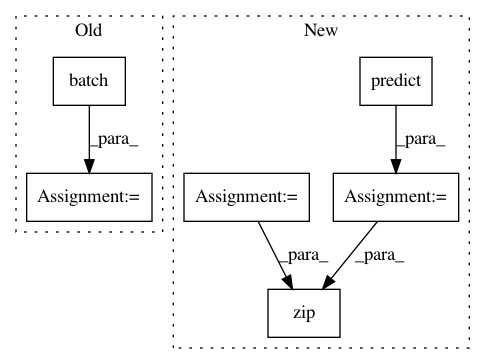

11e9c7adfbf7d50dd9ef4442cf7806cdb2ee2368,samples/core/get_started/custom_estimator.py,,main,#Any#,105
Before Change
classifier.train(input_fn=from_dataset(train), steps=args.train_steps)
// Evaluate the model.
test = make_dataset(test_x, test_y).batch(args.batch_size)
eval_result = classifier.evaluate(input_fn=from_dataset(test))
print("\nTest set accuracy: {accuracy:0.3f}\n".format(**eval_result))
// Generate predictions from the model
predict_input = make_dataset({
After Change
print("\nTest set accuracy: {accuracy:0.3f}\n".format(**eval_result))
// Generate predictions from the model
expected = ["Setosa", "Versicolor", "Virginica"]
predict_x = {
"SepalLength": [5.1, 5.9, 6.9],
"SepalWidth": [3.3, 3.0, 3.1],
"PetalLength": [1.7, 4.2, 5.4],
"PetalWidth": [0.5, 1.5, 2.1],
}
predictions = classifier.predict(
input_fn=lambda:eval_input_fn(predict_x, batch_size=args.batch_size))
for pred_dict, expec in zip(predictions, expected):
template = ("\nPrediction is "{}" ({:.1f}%), expected "{}"")
class_id = pred_dict["class_ids"][0]
In pattern: SUPERPATTERN
Frequency: 3
Non-data size: 6
Instances
Project Name: tensorflow/models
Commit Name: 11e9c7adfbf7d50dd9ef4442cf7806cdb2ee2368
Time: 2017-11-17
Author: markdaoust@google.com
File Name: samples/core/get_started/custom_estimator.py
Class Name:
Method Name: main
Project Name: tensorflow/models
Commit Name: 11e9c7adfbf7d50dd9ef4442cf7806cdb2ee2368
Time: 2017-11-17
Author: markdaoust@google.com
File Name: samples/core/get_started/premade_estimator.py
Class Name:
Method Name: main
Project Name: yahoo/TensorFlowOnSpark
Commit Name: 981e4266d4ea816b08a762193bd52f40cd1a3242
Time: 2019-08-07
Author: leewyang@verizonmedia.com
File Name: examples/mnist/keras/mnist_inference.py
Class Name:
Method Name: inference